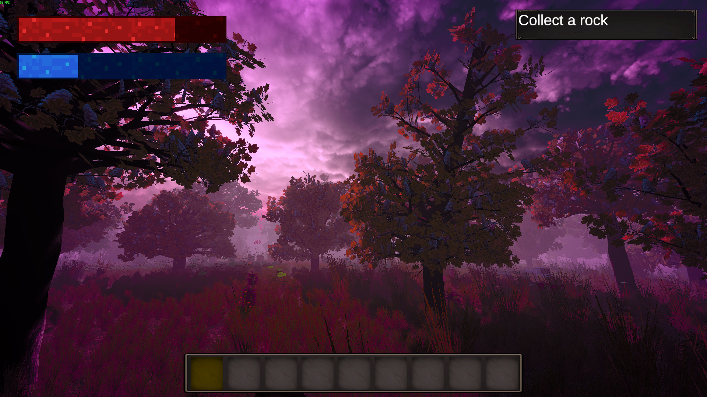
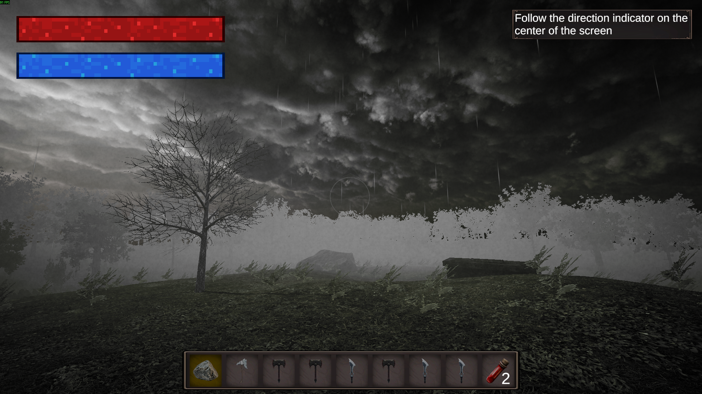

Wat was dit project?
In dit project werkte ik samen met een teamgenoot aan een game met meer complexiteit en een sterkere samenwerking. We richtten ons op gameplay, interactie en het maken van een complete speelervaring.
In dit project werkte ik samen met een teamgenoot aan een game met meer complexiteit en een sterkere samenwerking. We richtten ons op gameplay, interactie en het maken van een complete speelervaring.
Dit project hielp mij om beter te werken met anderen en om mijn programmeervaardigheden verder uit te breiden. Het was een mooie stap van solo ontwikkelen naar samenwerken op een groter project.

